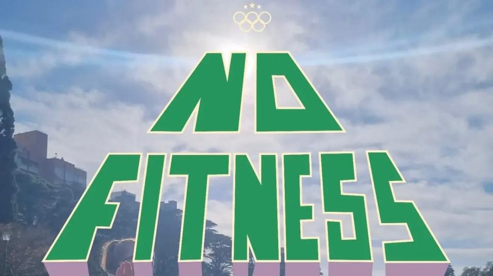

Bonus Track

Mano a mano
En este episodio nos metemos de lleno en el universo de No Fitness Army (NFA), la comunidad deportiva y movimiento urbano que está revolucionando la forma de entrenar en Rosario.
Conversamos con el profe Dani (@eldddani) sobre cómo nació este proyecto que rompe con la estructura del gimnasio tradicional para tomar los parques España e Independencia y transformarlos en puntos de encuentro, disciplina y salud compartida. Nos cuenta la trastienda de sus convocatorias masivas, el valor de entrenar en equipo al aire libre y la clave para construir un sentido de pertenencia auténtico sin barreras.
Mirá la entrevista completa y descubrí cómo la pasión por el deporte y el uso del espacio público crearon una de las redes más activas de la ciudad.
 MÚSICA
MÚSICA TEATRO
TEATRO CINE
CINE